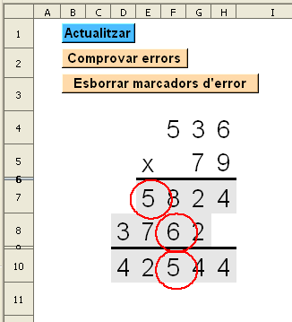
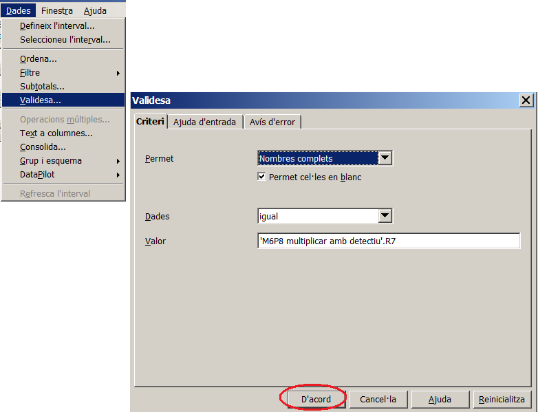

Multiplicació desenvolupada amb detectiu
Presentació gràfica de l'activitat

Funcions que es fan servir en aquesta activitat
- Operadors de sumar (+), multiplicar (*) i desigual (< >)
Objectiu de l'activitat
- Fer una multilplicació desenvolupada amb autoavaluació i amb la possibilitat de comprovar on són els erros si els hi ha.
- Fer una multiplicació desenvolupada amb menys passos dels que es van fer a la pràctica M2P3 multiplicació 3 2
Desenvolupament de l'activitat
1. Obrir el fitxer M6 i afegir un nou full amb el nom de M6P8 multiplicar amb detectiu.
2. Escriure a la cel·la K4: =SI($A$1=0;ALEATENTRE(1;9))
3. Copiar la cel·la K4 i enganxar-la a les cel·es del rang L4:M5
4. Connectar les cel·les K7:M7
5. Escriure a la cel·la k7: =VALOR($K$4&$L$4&$M$4)*M5
7. Escriure a la cel·la K8: =VALOR($K$4&$L$4&$M$4)*L5
9. Escriure a la cel·la K10: =K7+K8*10
11. Copiar la cel·la F4 i enganxar-la a les cel·les del rang G4:H5
12. Escriure el signe de multiplicar a la cel·la E5
13. Fer que les cel·les del rang E6:H6 tinguin els següents atributs:
Alçada: 0,10cm
Color de fons: negre.
14. Aplicar els mateixos atributs a les cel·les del rang D9:H9
15. Aplicar el color de fons gris 10% als següents rangs de cel·les: E7:H7, D8:G8, D10:H10
16. Aplicar el color de fons taronja 4 a les cel·les: I7, I8 i I10
Es convenient tenir en compte que en la primera i la segona fila del desenvolupament de la multiplicació pot haver-hi 3 o 4 números, i en la tercera fila (el resultat de la multiplicació) pot haver-hi de 4 a 5 números. Aquests números estan representats de manera concatenada a les cel·les K7, K8 i K10.
1. Escriure la fórmula =LONG(K7) a la cel·la S7. Un vegada se sap quants números té aquesta fila, s'escriu la fórmula =VALOR(MIG(K7;S7;1)) a la cel·la R7 i així s'obté el número corresponent a les unitats.
3. Per extraure el valor de la centena del número que hi ha a la cel·la K7, s'escriu a la cel·la P7: =VALOR(MIG(K7;S7-2;1)). Observar que a la cel·la S7 es resten dues unitats amb la qual cosa s'extreu el valor de la centena.
4. Per extraure el valor de la unitat de miler que hi ha a la cel·la K7, s'escriu a la cel·la O7: =SI(S7=3;"";VALOR(MIG(K7;1;1))).
Un vegada es tenen per separat els valors reals de la solució i els valors que s'hagin escrit en fer la multiplicació, es quan es poden comparar
per comprovar si hi ha errors o no. Per comprovar-ho, es pot fer el següent:
- Fer clic a la cel·la H7 i anar a Dades | Validesa | i clic a la solapa de criteri
- Del desplegable del bloc Permet, fer clic en Nombres complets
- Escriure a la casella del bloc Valor el següent: 'M6P8 multiplicar amb detectiu'.R7
- Fer clic en D'acord
Obsevar el següent gràfic:

Ara, per comprovar que funcioni el marcador d'errors, fer el següent:
- Escriure un número a la cel·la H7 un número diferent del que hi hagi a la cel·la R7.
- Anar a Eines | Detectiu | Marca les dades no vàlides. Havent-ho fet, hauria d'aparèixer un cercle vermell (marcador de dada no vàlida) encerclant la cel·la H7.
Per esborrar el marcador d'errors, anar a Eines | Detectiu | i clic en Suprimir tots els rastres.
Per comprovar si hi ha errors en la resta de números de la multiplicació es segueix el mateix procediment.

|
|

|
|
|